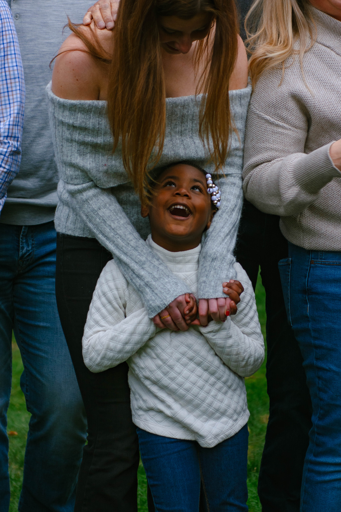
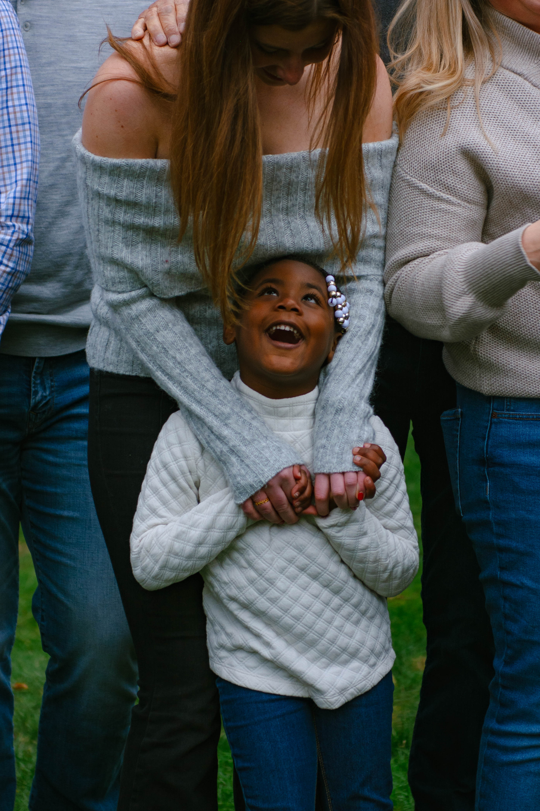
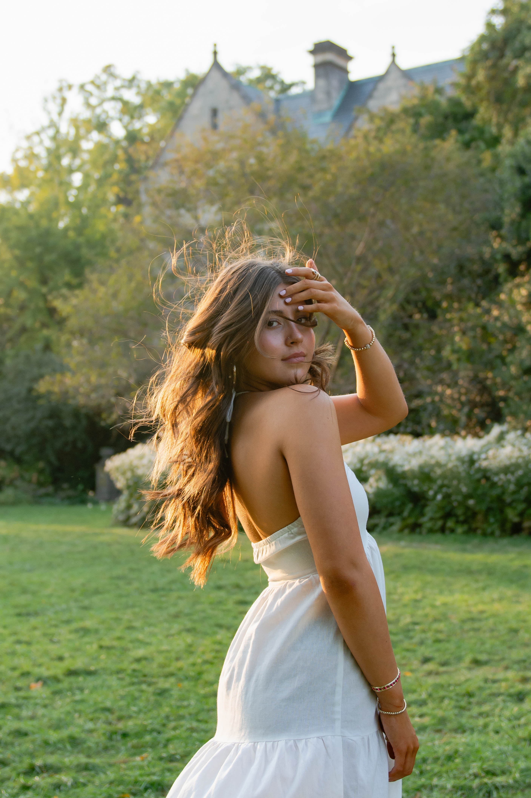
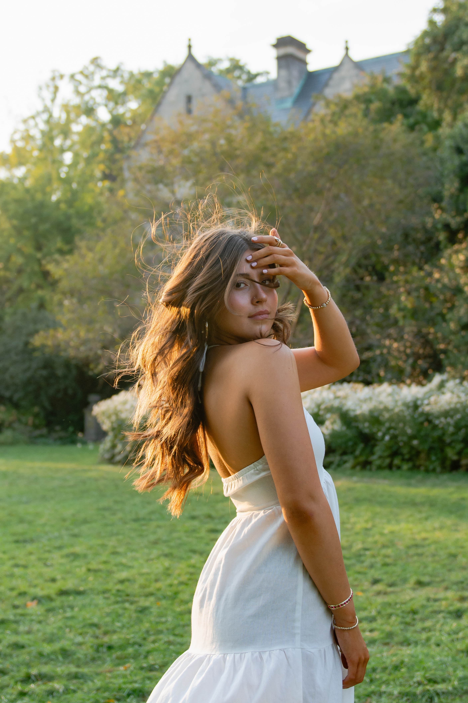
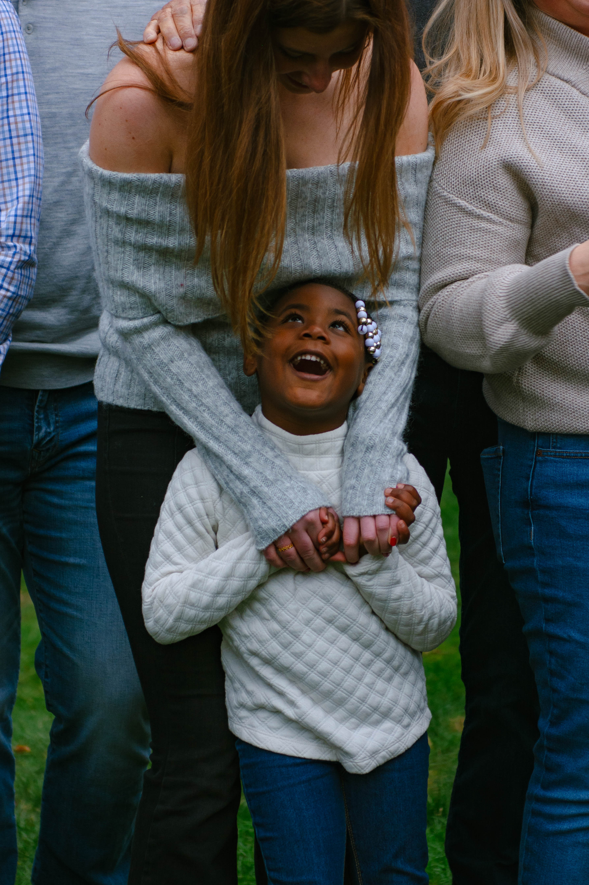
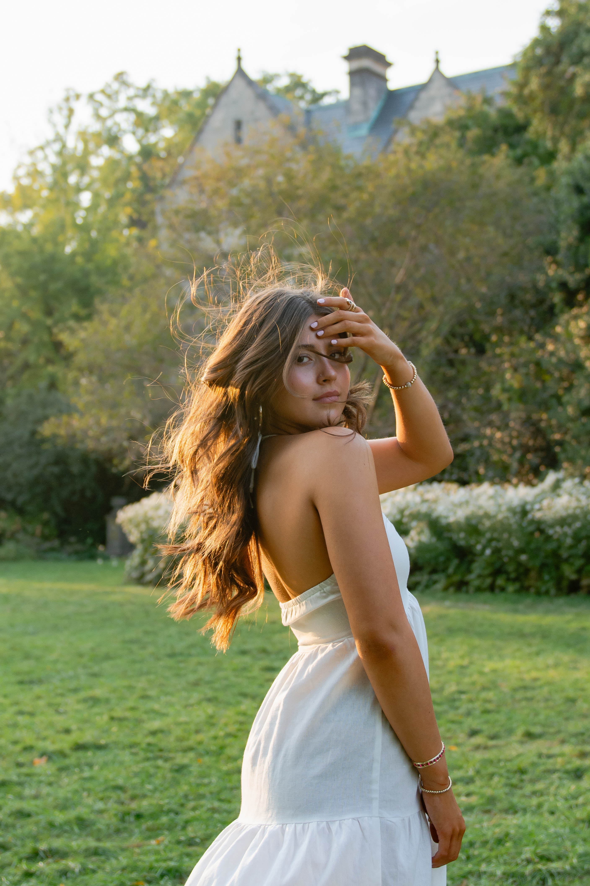

Portraits
Photos I have taken to mark the academic milestones of graduating students, celebrate gathered family members, support professionals, and capture the joys of friendship.
 

 



Photos I have taken to mark the academic milestones of graduating students, celebrate gathered family members, support professionals, and capture the joys of friendship.

